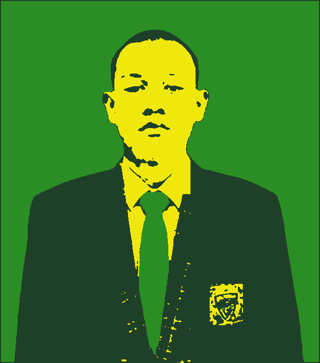
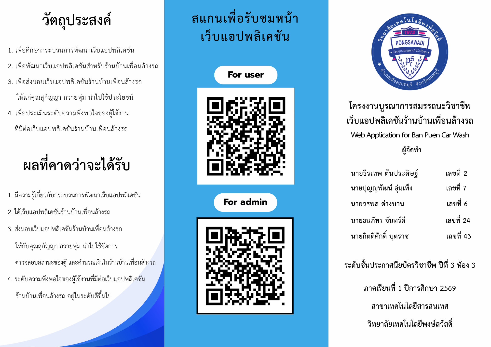

HTML / CSS
ออกแบบและพัฒนาเว็บไซต์แบบ Responsive
↳ เว็บนี้ทั้งเว็บ ทั้ง layout แอนิเมชัน และหน้าต่างแล็บคล่อง
</>VOCATIONAL STUDENT / ปวช.3 ปีการศึกษา 2569
TEERATEP TUNPADIT /// TATAR
สนใจการเขียนโปรแกรม การออกแบบดิจิทัล และการใช้เทคโนโลยีสร้างสิ่งที่มีประโยชน์ต่อผู้คนและโลก
"เทคโนโลยีที่ดีควรทำให้ชีวิตเบาลง ฉลาดขึ้น และยั่งยืนกว่าเดิม
ผมจึงใช้โค้ดออกแบบประสบการณ์ที่ใช้งานง่าย ตอบโจทย์จริง และไม่ทำให้ผู้ใช้ต้องคิดมากเกินจำเป็น"

SUBJECT / TATAR
MODE / BUILD + LEARN
WHO AM I?
ผมคือ ธีรเทพ ตันประดิษฐ์ (TATAR) นักเรียนระดับ ปวช.3 ที่ชอบเรียนรู้ผ่านการลงมือทำ โดยเฉพาะการเขียนโปรแกรมและการออกแบบประสบการณ์บนหน้าจอ
ผมสนใจจุดที่เทคโนโลยี และความคิดสร้างสรรค์มาบรรจบกัน เพราะเชื่อว่างานดิจิทัลที่ดีควรทั้งแก้ปัญหา สื่อสารตัวตน และสร้างผลกระทบที่ดีได้พร้อมกัน
MY TOOLKIT
ไม่ใช่แค่รู้จักเครื่องมือ แต่กำลังฝึกใช้มันให้เปลี่ยนไอเดียเป็นผลงาน
ออกแบบและพัฒนาเว็บไซต์แบบ Responsive
↳ เว็บนี้ทั้งเว็บ ทั้ง layout แอนิเมชัน และหน้าต่างแล็บเขียนโปรแกรมและต่อยอดเป็นโปรเจกต์
↳ กำลังฝึกต่อยอดเป็นโปรเจกต์ของตัวเองINTERACTIVE ARCHIVE
ทุกโปรเจกต์คือบันทึกของการลองผิด ลองใหม่ และพัฒนาทักษะให้ไปไกลกว่าเดิม ชิ้นที่ 02 และ 03 เปิดลองเล่นได้ในหน้านี้
พื้นที่รวมตัวตน ทักษะ และกระบวนการเรียนรู้ ผ่านภาษาภาพแบบ Creative Technology
VIEW START ↗พิมพ์ชื่อ เลือกธาตุพลังงาน แล้วให้โค้ดวาดยันต์ดิจิทัลที่ไม่ซ้ำใคร พร้อมดาวน์โหลดเก็บไว้ได้
สนามทดลองฟิสิกส์จริง ลากและโยนพลังงานแสงอาทิตย์ หมุนกังหันลม เพื่อชาร์จกริดให้เต็ม 100%
REAL PROJECTS
โปรเจกต์ที่ทำจริงและเชื่อมต่อฐานข้อมูล ตอนนี้ปิดเซิร์ฟเวอร์ไปแล้ว จึงเก็บภาพและลิงก์ไว้ให้ดูการทำงานแทน

เป็นเว็บแอปพลิเคชันสำหรับดูคิวการล้างรถ และมีระบบจัดการลูกค้าและรายการบริการสำหรับผู้ประกอบการ
ปิดเซิร์ฟเวอร์ฐานข้อมูลแล้ว · ดูการทำงานผ่านภาพ/คลิป
ดูผลงาน ↗CURRENT MISSION
ฝึกทักษะ Python, Web Development และการออกแบบดิจิทัลอย่างต่อเนื่อง
รวบรวมผลงานและต่อยอดความสนใจด้านเทคโนโลยีสร้างสรรค์
ศึกษาต่อด้านเทคโนโลยี ฝึกฝนทักษะการพัฒนาซอฟต์แวร์ และเรียนรู้เครื่องมือใหม่ ๆ เพื่อเติบโตเป็นนักพัฒนาที่สร้างผลงานได้จริง
HOW IT WAS MADE
เว็บนี้ตั้งใจให้เป็นผลงานสร้างสรรค์ชิ้นหนึ่ง ทุกสี ฟอนต์ และการเคลื่อนไหวจึงถูกเลือกให้เล่าเรื่องเดียวกัน
ภาษาภาพแบบอิเล็กทรอนิกส์และงานทดลอง ผสมกับแนวคิดพลังงานสะอาด โดยตีความยันต์ไทยใหม่ให้เป็นลายวงจรดิจิทัล
ไม่ใช้ framework ยันต์วาดด้วยโค้ด เสียงสังเคราะห์ในเบราว์เซอร์ และฟิสิกส์คำนวณจริงทุกเฟรม
OPEN CHANNEL
สำหรับโอกาสในการเรียนรู้ โปรเจกต์ หรือการพูดคุยเรื่องเทคโนโลยี